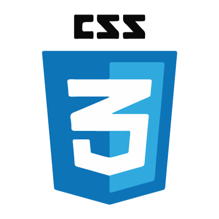
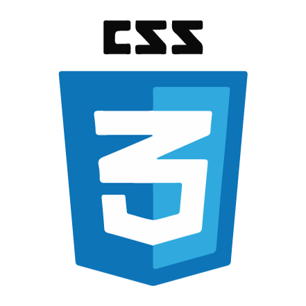

About
Full Stack Web Developer able to build a sophisticated responsive websites, web apps, and mobile applications with full database back-end all the way from mock-up to roll-out. Adept at working with diverse teams to create projects within designated deadlines. Extraordinary at communicating technically and professionally to all superiors and fellow peers. Using time management experience from the construction industry to implement project organization.
Building state-of-the-art, easy to use, user friendly, responsive websites and applications is truly a passion of mine and I amconfident I would be an excellent addition to your organization. In addition to my knowledge base, I actively seek out new technologies and stay up to date on industry trends and advancements. This has allowed me to stay ahead of the curve and deliver exceptional work to all of my employers, including those I have worked for on a project basis. I have attached a copy of my resume detailing my excperience, along with a link to my portfolio that contains links to websites and applications I have had the pleasure of working on
 
